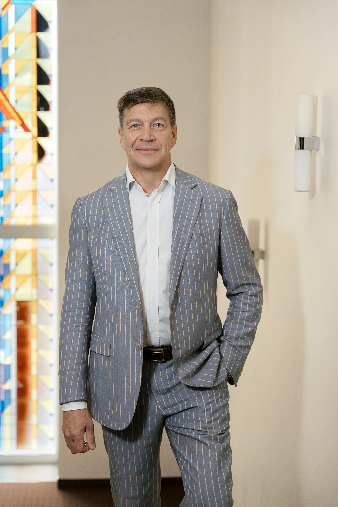

Разум, который заглянул внутрь — и построил окно.
Изобретатель, исследователь микродинамики радужки и зрачка, создатель уникального оптического инструмента ОкО. Патент RU (11) 187 532 (13) U1.

Изобретатель, который показал глазу самого себя
Сергей Стрельников с детства увлекался физикой и математикой. Окончив мехмат МГУ и Российскую Экономическую Школу, он долгие годы работал топ-менеджером в Москве. Но ритм мегаполиса требовал пауз. Именно тогда к нему пришла идея: что если дать зрительному мозгу настоящую перезагрузку с помощью чистой физики?
Первые образцы появились в 2010 году. Сергей принял радикальное решение: отказаться от линз в пользу вогнутых зеркал. Эта замена привела к феноменальному открытию. Соединившись с зеркалами, человеческий зрачок образовал замкнутую оптическую систему. Посмотрев в ОкО, Сергей обнаружил явление, которое наука до него не фиксировала: непрерывную жизнь глаза, которую он назвал микродинамикой радужки и зрачка.
Открытие требовало проверки. ОкО изучали учёные МГУ, СПбГУ, ИППИ РАН и Института физиологии им. И.П. Павлова, а также психотерапевты. Получив однозначно положительную обратную связь от научного сообщества о глубоком расслабляющем эффекте системы, Сергей запатентовал изобретение. Так ОкО стало доступно миру — как первый инструмент для встречи человека с самим собой.
«Радужка не стареет. В восемьдесят она такая же богатая, живая, прекрасная, как в двадцать. ОкО — первый инструмент, который позволяет человеку это увидеть — и быть встреченным этим.»— Создатель ОкО
Открытие, которого никто не видел
Оптическая система ОкО — вогнутое серебряное или золотое зеркало напротив выпуклого тёмного зеркала зрачка — образует замкнутую оптическую петлю. Каждое микродвижение радужки мгновенно отражается и увеличивается. Результат — живое стереокино, видимое только одному зрителю: вам.
Внутри зрачка вы видите отражение всего глаза — внутри которого снова виден зрачок, внутри которого снова весь глаз, и так далее — бесконечно. Вы смотрите на живую бесконечность. Каждый кадр уникален. Каждый момент неповторим.
Это кино нельзя снять. Нельзя описать достаточно точно словами. Нельзя передать другому человеку. Его не существовало до ОкО. И оно уникально в каждый момент времени.
Намерение создателя было не мистическим — оно было физическим. Но то, о чём сообщают пользователи, выходит за рамки ожидаемого: глубокая тишина, замедление внутреннего шума, и то, что древние традиции давно называют активацией третьего глаза — не через годы практики, а за один сеанс, через чистую оптику.
Мастерство и конструкция
Каждое ОкО изготавливается вручную небольшой командой мастеров. Безупречное качество, долговечность и тактильное удовольствие — латунь, зеркала, ореховое дерево. Инструмент, созданный служить вам десятилетиями.
Латунный корпус
Из цельной латуни. С использованием развивает естественную патину — каждое ОкО со временем становится уникальным.
Вогнутые зеркала
Многослойное серебряное или золотое вакуумное покрытие. Радиус кривизны откалиброван для микродинамики радужки. Настройка под каждый глаз.
Ореховое дерево
Благородные ореховые акценты. Тёплый, природный, полностью аналоговый.
Патентная защита
RU (11) 187 532 (13) U1 — зарегистрированное изобретение. Конструкция не может быть скопирована без письменного разрешения.
Картина, которую не увидит никто, кроме вас.
Ваше ОкО изготавливается вручную. Срок — 4–6 недель.